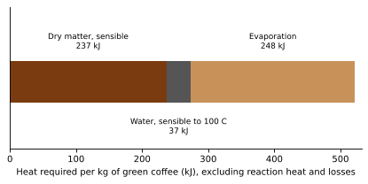

6. Green coffee: the roasting input
What does the roaster start with, and which properties of the green bean decide what roasting can do?
After this chapter you can
- State the main components of arabica and robusta green coffee and their consequences for roasting.
- Convert between wet-basis and dry-basis moisture and use them in mass balances.
- Explain water activity and sorption isotherms, and their role in storage stability.
- Estimate the heat needed to roast a batch from its composition and physical properties.
- Describe green coffee grading, defects and the risk of ochratoxin A.
Prerequisites: Appendix A, Section A.1 (amount of substance); Appendix C, Section C.6 (heat transfer).
Two sacks of green coffee arrive at a roastery. Both are graded specialty arabica, both read 11% moisture, and the roaster applies the same profile to each. One roasts evenly and tastes sweet; the other runs fast, scorches at the edges and tastes flat. Somewhere in the green beans is the difference.
The chapters so far worked backward from the cup to the roasted bean. This chapter reaches the starting material. It describes what green coffee contains, how its water is held, how much heat a roast must supply, and what defects and contaminants roasting cannot remove. Chapters 7 and 8 then follow the bean through the roaster.
1. Composition by species
Almost all commercial coffee comes from two species: Coffea arabica (arabica) and Coffea canephora, traded mainly as robusta. Their green beans differ in composition, and the differences carry through roasting into the cup. Percentages here are of dry matter, the mass that remains after all water has been removed.
| Component (% of dry matter) | Arabica | Robusta |
|---|---|---|
| Polysaccharides | 34 to 44 | 48 to 55 |
| Lipids (oils) | 15 to 17 | 7 to 10 |
| Sucrose | 6.25 to 8.45 | 0.9 to 4.85 |
| Caffeine | 0.9 to 1.3 | 1.51 to 3.33 |
| Trigonelline | 0.6 to 2.0 | about 0.6 to 1.24 |
| Chlorogenic acids | 4 to 12 (both species, combined range) |
The ranges are those reported by Caporaso and colleagues (2018) and a 2026 review [1][2]. Another study reports robusta sucrose of 4.05 to 7.05%, so the robusta range is wide and overlaps arabica's at its upper end. Figure 6.1 draws the ranges on one scale.

Figure 6.1. Composition ranges of green arabica and robusta, dry basis. The logarithmic scale lets components spanning a hundredfold range appear together; note where the bars overlap and where they do not.
Polysaccharides are long chains of sugar units that make up the cell walls. Sucrose is ordinary table sugar, a molecule made of one glucose and one fructose unit. Trigonelline is a nitrogen-containing compound related to vitamin B3. Three differences between the species matter most for roasting.
- Sucrose. Sucrose is a precursor, a starting material from which other compounds form, for most of the acids created in roasting and for many caramel-like aroma compounds (Chapter 8). Arabica's higher sucrose gives the roaster more to work with, which is one reason robusta develops less acidity and less sweet aroma.
- Lipids. Arabica contains about twice as much oil. Oil carries aroma, contributes to crema and body, migrates to the surface of dark roasts, and oxidises during staling (Chapter 5).
- Caffeine and chlorogenic acids. Robusta's higher caffeine, and generally higher chlorogenic acid content, raise bitterness after roasting (Chapter 1).
Robusta also contains more reducing sugars, sugars such as glucose and fructose whose open-chain form has a free carbonyl group able to react with amino acids [1]. They react faster in the browning reactions of Chapter 8 than sucrose, which must first be broken apart.
Worked example: Sucrose in a batch
Problem. A green bean weighs about 0.15 g at 11% moisture, and its dry matter is 7% sucrose. How much sucrose does one bean hold, and how much does a 250 g batch carry into the roaster?
Plan. Find the dry matter first, then the sucrose.
Solution. Dry matter per bean: 0.15 × (1 − 0.11) = 0.134 g. Sucrose: 0.07 × 0.134 = 9.3 mg. For the batch: 250 × 0.89 × 0.07 = 15.6 g.
Check. A medium roast destroys most of that sucrose, so those 15.6 g are the raw material for most of the acids that will later be titrated in the cup.
2. Water: moisture and water activity
Green coffee for roasting typically contains 10 to 12% water. Two different questions can be asked about that water: how much is there, and how available is it?
Moisture content
Moisture can be expressed on two bases. The wet basis divides the mass of water by the total mass; trade specifications use it. The dry basis divides the mass of water by the mass of dry matter; drying and heating calculations use it, because the dry matter stays constant while water leaves. The two convert as follows:
| X = w / (1 − w), and w = X / (1 + X) | (6.1) |
| where | w | moisture content, wet basis (fraction) |
| X | moisture content, dry basis (fraction) |
Worked example: How much of roast loss is water?
Problem. A 250 g batch at 11.0% moisture leaves the roaster at 215 g, a 14.0% mass loss. If the roasted beans hold 1.5% moisture, how much of the loss is water and how much is dry matter?
Plan. Split both the green and roasted masses into water and dry matter.
Solution. Green: 0.110 × 250 = 27.5 g of water and 222.5 g of dry matter. Roasted: 0.015 × 215 = 3.2 g of water and 211.8 g of dry matter. Water lost: 24.3 g. Dry matter lost: 10.7 g, which is 4.8% of the dry matter, leaving as CO2, water formed by reactions, and volatile compounds.
Check. 24.3 + 10.7 = 35.0 g, the total loss. Most of the loss is water; the information about roast degree is in the remaining few percent. Two lots that start at different moisture show different total losses at the same roast degree, so total loss compares batches only within one green lot.
Water activity
Moisture content says how much water is present. Water activity says how available it is, to microbes, to enzymes and to chemical reactions. It is the ratio of the water vapour pressure above the sample to the vapour pressure above pure water at the same temperature:
| aw = p / p0 = ERH / 100 | (6.2) |
| where | aw | water activity (0 to 1) |
| p | water vapour pressure in equilibrium with the sample (Pa) | |
| p0 | vapour pressure of pure water at the same temperature (Pa) | |
| ERH | equilibrium relative humidity: the humidity of air that neither gives water to nor takes water from the sample (%) |
The link between moisture content and water activity is the sorption isotherm: a curve of the moisture content a material reaches in equilibrium with air of each relative humidity, at fixed temperature. Isotherms of foods are S-shaped. At low water activity, water is bound tightly to the solid; in a middle range, more loosely; at high water activity it behaves almost like free water. Because the shape depends on composition and structure, two coffees with the same moisture content can have different water activities.
A summary of storage trials puts the best range for green coffee at aw 0.45 to 0.55, corresponding roughly to 10.5 to 11.5% moisture, with 0.50 the most stable over 18 months. Water activity did not predict cup score, but it did predict how long quality lasted [3]. High water activity favours mould and oxidation; very low water activity is associated with faded, papery flavour after storage.
Common misconception
"A moisture reading of 11% means the coffee is safe to store." Moisture content does not say how available the water is. Two lots at 11% can sit at different water activities, and a warehouse at high humidity will push any lot upward over time. Water activity, not moisture content alone, governs mould growth and the rate of quality loss.
Status of the evidence
The water-activity ranges come from a practitioner's summary of storage trials, not from a peer-reviewed meta-analysis. Their direction agrees with general food science; treat the specific optimum as guidance and check it against your own storage data.
Check your understanding: Sections 1 and 2
3. Physical properties
The roaster must also deal with the bean as a physical object: its size, density and ability to conduct heat.
Grading. Green coffee is sorted by screen size, the sieve opening a bean will not pass through, in units of 1/64 inch:
| aperture = 25.4 × screen / 64 | (6.3) |
| where | aperture | sieve opening (mm) |
| screen | screen number |
Screen 17, for example, is 6.75 mm. Lots are also graded by density and by defect count. Uniform size and density help a batch roast evenly, because small or light beans heat faster than large or dense ones in the same drum.
Density. Bulk density, the mass of beans that fills a given volume including the gaps between them, is commonly 650 to 750 g/L for green coffee, with dense high-grown beans at the upper end. Roasting roughly halves it, as beans expand and lose mass.
Thermal properties. A 2025 model of a single bean heating in a roaster used a bean volume of 1.44 × 10−7 m3 and a surface area of 1.63 × 10−4 m2 [4]. It took the bean's thermal conductivity as 0.11 W/(m K) and its initial moisture as 0.13 on a dry basis. Thermal conductivity, λ, measures how readily heat flows through a material. Comparing it with how fast heat arrives at the bean's surface shows whether the inside of the bean keeps up with the outside, which Chapter 7 develops using the Biot number.
4. A heat budget
How much heat does a roast require? Three quantities answer the question. The specific heat capacity, cp, is the heat needed to warm 1 kg of a material by 1 K: about 1.4 kJ/(kg K) for coffee dry matter and 4.18 kJ/(kg K) for water. For a moist bean the two combine in proportion:
| cp = (1 − w) cp,dry + w cp,water | (6.4) |
| where | cp | specific heat capacity of the moist bean (kJ/(kg K)) |
| w | moisture, wet basis (fraction) |
The latent heat of vaporisation, Lv, about 2,257 kJ/kg, is the heat needed to turn water into vapour without changing its temperature.
Worked example: Where the heat goes
Problem. How much heat does it take to bring 1 kg of green coffee at 11% moisture from 20 to 210 °C, ignoring heat released by reactions and heat lost from the roaster?
Plan. Add three terms: warming the dry matter, warming the water to its boiling point, and evaporating the water.
Solution. Dry matter: 0.89 × 1.4 × 190 = 237 kJ. Water to 100 °C: 0.11 × 4.18 × 80 = 37 kJ. Evaporation: 0.11 × 2,257 = 248 kJ. Total: about 520 kJ.
Check. Evaporation needs about as much heat as warming all the dry matter, as Figure 6.2 shows. A batch two percentage points wetter needs about 45 kJ/kg more for evaporation alone and will spend longer in the drying phase.

Figure 6.2. Heat to take 1 kg of green coffee at 11% moisture from 20 to 210 °C. The evaporation segment is as long as the dry-matter segment.
Chapter 7 turns this budget into an energy balance that follows the bean's temperature through a roast.
5. Defects and ochratoxin A
Green grading counts defects in a sample, typically 350 g in SCA protocols: entirely black or sour beans, insect damage, broken beans, foreign matter and others, each with a weight in the count. Primary defects, such as fully black or sour beans, carry strong off-flavours, and a few can be detected in a cup.
A more serious hazard is invisible. A mycotoxin is a toxic compound produced by moulds. Ochratoxin A (OTA) is produced by some Aspergillus and Penicillium moulds when coffee cherries or beans dry slowly or are stored damp. It damages the kidneys and is classified as possibly carcinogenic to humans. The European Union sets maximum levels of 3.0 µg/kg for roasted coffee and 5.0 µg/kg for soluble coffee [5].
Common misconception
"Roasting destroys mould toxins, so mouldy green coffee is safe once roasted." Roasting destroys part of the OTA present, and kinetic studies have modelled the destruction [6], but the reported reductions vary widely with roast conditions and measurement method. Roasting cannot be relied on to make contaminated coffee safe. Prevention depends on fast, even drying to a safe water activity and dry storage.
6. What the roaster inherits
The green bean sets the limits of roasting. Its water fixes the length and energy of the drying phase. Its sucrose, amino acids and chlorogenic acids are the precursors from which acids, bitterness, colour and aroma will form. Its density and size govern how fast heat reaches the centre of the bean and how evenly a batch roasts. Its oil decides how aroma and staling behave afterwards. Defects and mould contamination cannot be roasted out.
We can now return to the two sacks. Equal moisture content and grade do not guarantee equal density, size uniformity, sucrose or water activity, and each of these changes how a bean takes heat and what it becomes.
Looking ahead
With the starting material described, the next step is the process itself. Chapter 7 asks how heat gets into a bean, where that heat goes, and what a roaster's temperature log can and cannot tell us.
Key equations
| Quantity | Equation | Notes |
|---|---|---|
| Moisture bases | X = w / (1 − w); w = X / (1 + X) | Equation 6.1. |
| Water activity | aw = p / p0 = ERH / 100 | Equation 6.2. |
| Screen size | aperture (mm) = 25.4 × screen / 64 | Equation 6.3. |
| Moist specific heat | cp = (1 − w) cp,dry + w cp,water | Equation 6.4. |
Key terms
Bulk density; dry basis; dry matter; latent heat of vaporisation; mycotoxin; Ochratoxin A; Polysaccharides; precursor; reducing sugar; screen size; sorption isotherm; specific heat capacity; Sucrose; thermal conductivity; Trigonelline; Water activity; wet basis.
Chapter review
Labs
Lab L6.1: Moisture by oven drying
Aim. Measure the moisture content of green coffee by drying and compare it with a meter reading or the supplier's specification.
Safety
- Oven at 105 °C and hot dishes: use tongs and heat-resistant gloves.
Materials
- Analytical balance (0.001 g)
- Oven at 105 °C
- Aluminium dishes
- Desiccator or sealed jar with silica gel
- Grinder
Method
- Grind about 10 g of green coffee coarsely and weigh three 5 g portions into dried, tared dishes.
- Dry at 105 °C for 16 hours or to constant mass, cool in the desiccator, and weigh.
Data sheet
| Dish | Tare (g) | Wet sample (g) | Dry sample (g) | Moisture, wet basis (%) | Moisture, dry basis (%) |
|---|---|---|---|---|---|
Analysis
- Report the mean and standard deviation and compare with the specification.
- Some water is lost during grinding before weighing; estimate how much this biases the result.
Lab L6.2: Screen size and bulk density
Aim. Characterise a green lot's size distribution and bulk density, and relate them to roast evenness.
Materials
- Screen sieves (for example 14 to 19)
- 1 L measuring cylinder
- Balance
Method
- Sieve 300 g through the screen stack and weigh each fraction.
- Pour green beans into the cylinder to 1 L without tapping and weigh them. Repeat three times.
- If a roaster is available, roast two screen fractions separately to the same end temperature and compare their colour.
Data sheet
| Screen | Mass (g) | Mass % | Bulk density (g/L) | Roast colour |
|---|---|---|---|---|
Analysis
- Report the screen distribution and the mean bulk density with its standard deviation.
Lab L6.3: Water activity (if a meter is available)
Aim. Measure the water activity of several green coffees and compare it with their moisture content.
Materials
- Water activity meter
- Three or more green coffees
- Oven-drying equipment from L6.1
Method
- Measure the water activity of each coffee at a recorded temperature, and its moisture content as in L6.1.
Data sheet
| Coffee | aw | Moisture (%) | Temperature (°C) |
|---|---|---|---|
Analysis
- Plot water activity against moisture. Do all coffees fall on one curve?
Problems
- [A, Section 1] Name two compositional differences between arabica and robusta and one roasting consequence of each. Solution
- [A, Section 2] Convert 13% dry-basis moisture to wet basis. Solution
- [A, Section 2] Why can a lot with acceptable moisture content still grow mould? Solution
- [B, Section 2] A 1.00 kg batch at 12.0% moisture leaves the roaster at 845 g with 1.8% moisture. Compute the water lost and the dry matter lost, the latter as a percentage of dry matter. Solution
- [B, Section 4] Compute the specific heat capacity of green coffee at 11% and at 13% moisture. Solution
- [B, Section 4] How much more heat is needed for evaporation in a 12 kg batch at 12.5% moisture than at 10.5%? Solution
- [B, Section 3] For the 2025 model bean (V = 1.44 × 10−7 m3, A = 1.63 × 10−4 m2, λ = 0.11 W/(m K)), compute the Biot number hLc/λ with Lc = V/A, for h = 30 and h = 100 W/(m2 K). What does a value above 0.1 mean? Solution
- [B, Section 1] A roaster's 60 kg batch of arabica averages 7.3% sucrose (dry basis) at 11% moisture. How many kilograms of sucrose enter the roaster? Solution
- [C, Section 2] Explain why roast mass loss is a poor measure of roast degree across different green lots, and propose a better one. Solution
- [C, Section 2] A green coffee warehouse sits at 75% relative humidity in the rainy season. Using sorption and water activity, describe the risk and a way to reduce it. Solution
Tiers: A recall, B calculation, C analysis or design.
References
- Caporaso N., Whitworth M.B., Grebby S., Fisk I.D. (2018), Non-destructive analysis of sucrose, caffeine and trigonelline on single green coffee beans by hyperspectral imaging, Food Research International 106:193.
- Review of chlorogenic acids and trigonelline in coffee, Trends in Sciences 23(9):13444 (2026).
- Martinez Agudelo Y. (2021), An introduction to water activity in green coffee, Daily Coffee News.
- Bustos-Vanegas J.D. et al. (2025), Modeling and simulation of coffee bean heating during roasting: effect of heat generation, Frontiers in Food Science and Technology.
- Commission Regulation (EU) 2022/1370 amending Regulation (EC) No 1881/2006 as regards maximum levels of ochratoxin A in certain foodstuffs (now consolidated in Regulation (EU) 2023/915).
- Kinetics of ochratoxin A destruction during coffee roasting (INCA repository record).
Answers to self-checks
Check your understanding: Sections 1 and 2
- 11.11 %. X = 0.10/0.90 = 0.1111.
- Sucrose. Sucrose breaks down into formic, acetic, glycolic and lactic acids, among other products.
Chapter review
- can differ, because sorption isotherms depend on composition and structure. Moisture content and water activity are linked by an isotherm specific to each material.
- 7.14 mm. 25.4 × 18/64 = 7.14 mm.
- Evaporating the water. Evaporation takes about 248 kJ, slightly more than the 237 kJ for warming the dry matter.
Worked solutions to all problems: 6. Green coffee: the roasting input solutions.
Upstream, Second edition, version 2.2 (changes and errata). © 2026 [Author name]. Licensed for personal use; see licence.